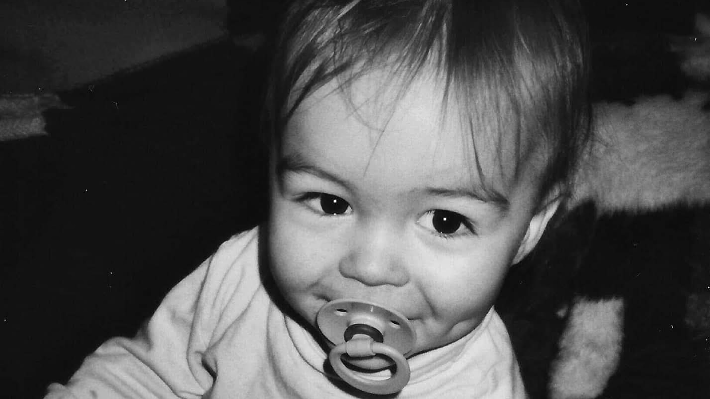
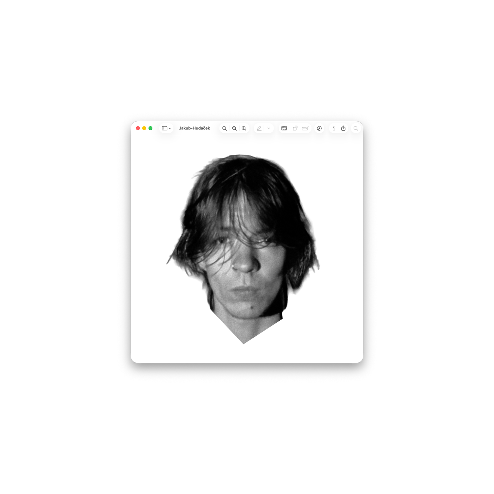
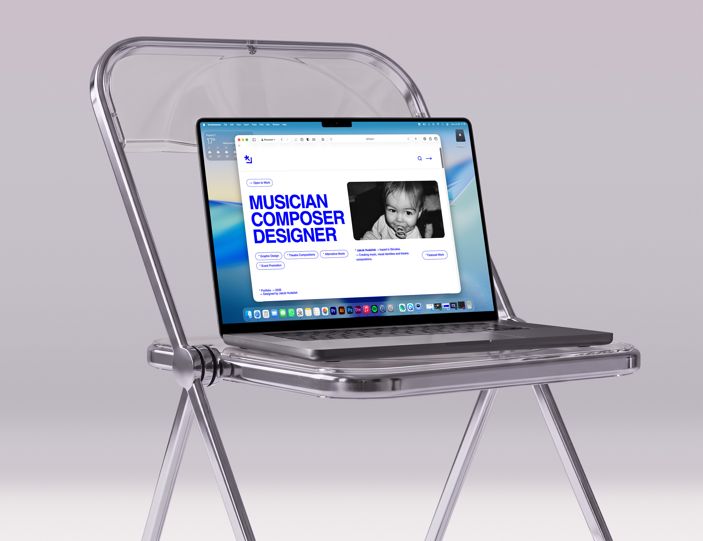
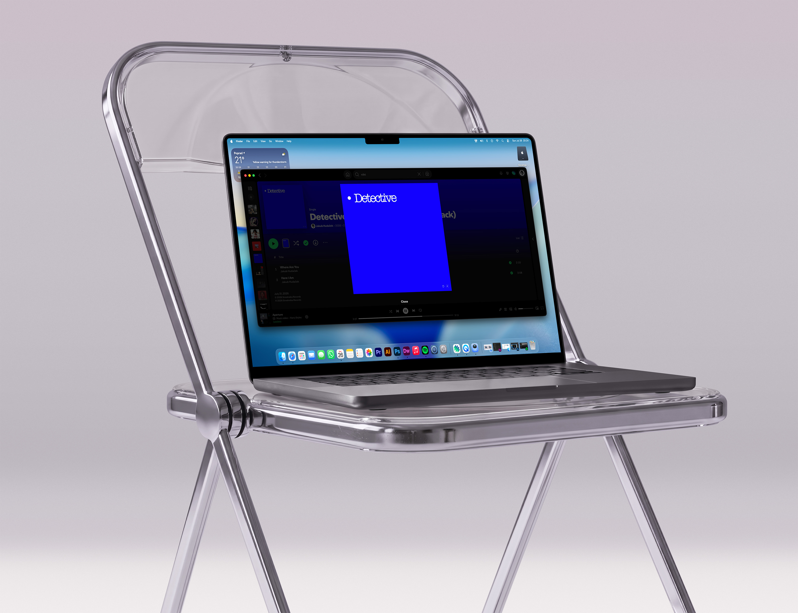
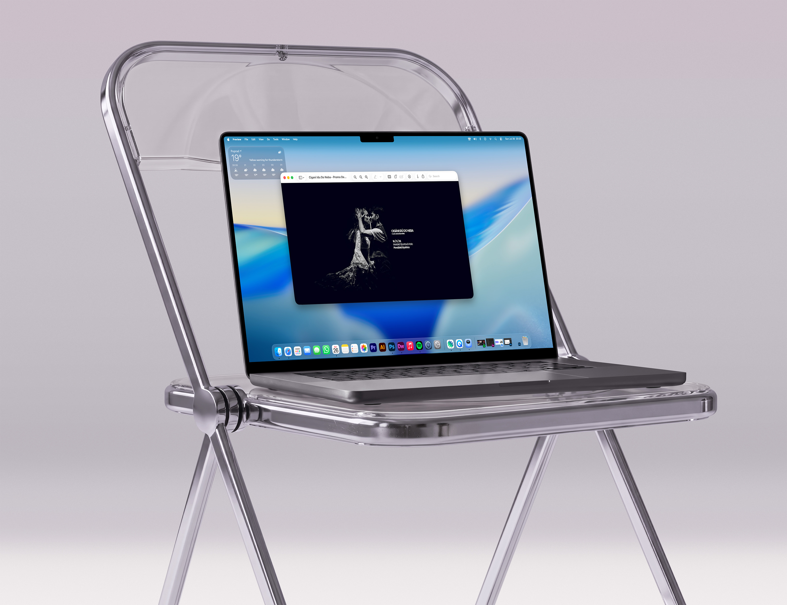
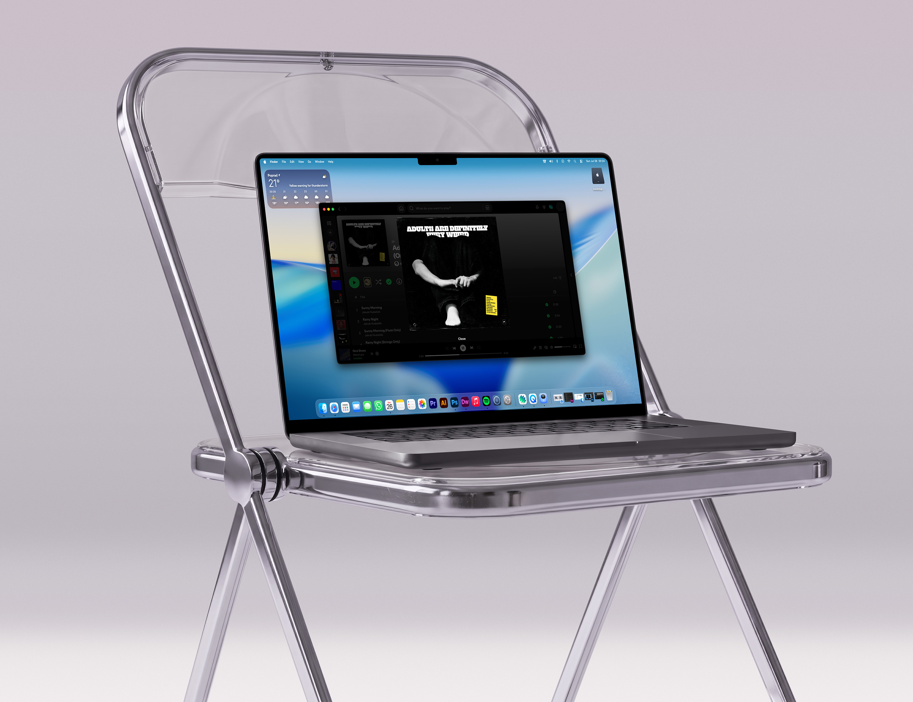
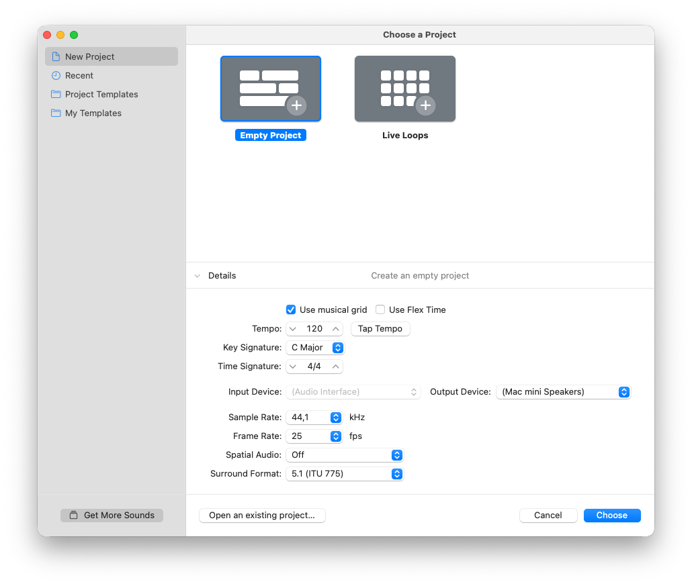

2026
THEATRE COMPOSITIONS
THEATRE COMPOSITIONS
Adults Are Definitely Very Weird
Original soundtrack and sound design created for an award-winning theatre performance.
→
Open to Work

* Jakub Hudaček is a Slovak musician, composer, sound engineer and graphic designer creating music, visual identities, websites and original theatre compositions.
* Featured Work* Portfolio → 2026
→ Designed by Jakub Hudaček

→ Introduction
Multidisciplinary independent artist who combines songwriting, composition, production, design, and technology. I'm motivated by building meaningful, cohesive work that lasts, and I'm willing to invest significant time refining both the artistic and technical sides of my projects rather than settling for something merely good enough.
→ Continue Reading→ Selected project, 'Na Skle Maľované' is an official promo work that I'm currently working on for an upcoming musical production.

→ Selected projects showcasing some of my most recent and favourite creative work across music, design, and visual media.





From composing theatre soundtracks and producing independent music to designing visual identities, websites and promotional campaigns, I've built experience across multiple creative disciplines. Explore my professional background, selected projects, technical skills and work history in my complete resume.
→ View Resume→ A selection of productions, releases and projects that represent my work across theatre, music and design.
Original soundtrack and sound design created for an award-winning theatre performance.
Branding, promotional materials and websites for musical and cultural projects.
Debut studio album written, produced, recorded and engineered independently.
Original soundtrack and sound design created for an theatre performance played across Slovakia and Czech Republic.

→ Collaboration
I'm available for commissions and collaborations across theatre composition, music production, graphic design, branding, websites, and promotional campaigns. Whether you're starting with a rough idea or a finished concept, I'd be glad to discuss how I can contribute to your project.
→ Get in touch© 2026